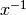
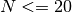

3. Machine Learning 102: Practical Advice¶
Note
The information in this section is available in an interactive notebook 06_learning_curves.ipynb, which can be viewed using iPython notebook.
In practice, much of the task of machine learning involves selecting algorithms, parameters, and sets of data to optimize the results of the method. All of these things can affect the quality of the results, but it’s not always clear which is best. For example, if your results have an error that’s larger than you hoped, you might imagine that increasing the training set size will always lead to better results. But this is not the case! Below, we’ll explore the reasons for this.
Note
much of the material in this section was adapted from Andrew Ng’s excellent set of machine learning video lectures. See http://www.ml-class.org.
In this section we’ll work with an extremely simple learning model: polynomial regression. This simply fits a polynomial of degree d to the data: if d = 1, then it is simple linear regression. Polynomial regression can be done with the functions polyfit and polyval, available in numpy. For example:
>>> import numpy as np
>>> np.random.seed(42)
>>> x = np.random.random(20)
>>> y = np.sin(2 * x)
>>> p = np.polyfit(x, y, 1) # fit a 1st-degree polynomial (i.e. a line) to the data
>>> print p
[ 0.97896174 0.20367395]
>>> x_new = np.random.random(3)
>>> y_new = np.polyval(p, x_new) # evaluate the polynomial at x_new
>>> print abs(np.sin(x_new) - y_new)
[ 0.22826933 0.20119119 0.20166572]
Using a 1st-degree polynomial fit (that is, fitting a straight line to x and y), we predicted the value of y for a new input. This prediction has an absolute error of about 0.2 for the few test points which we tried. We can visualize the fit with the following function:
>>> import pylab as pl
>>> def plot_fit(x, y, p):
... xfit = np.linspace(0, 1, 1000)
... yfit = np.polyval(p, xfit)
... pl.scatter(x, y, c='k')
... pl.plot(xfit, yfit)
... pl.xlabel('x')
... pl.ylabel('y')
Calling plot_fit with the x, y, and p values from above produces the following figure:

Best-fit linear regression to sinusoidal data.
When the error of predicted results is larger than desired, there are a few courses of action that can be taken:
- Increase the number of training points N. This might give us a training set with more coverage, and lead to greater accuracy.
- Increase the degree d of the polynomial. This might allow us to more closely fit the training data, and lead to a better result
- Add more features. If we were to, for example, perform a linear regression using
,
, , or other functions, we might hit on a functional form which can better be mapped to the value of y.
The best course to take will vary from situation to situation, and from problem to problem. In this situation, number 2 and 3 may be useful, but number 1 will certainly not help: our model does not intrinsically fit the data very well. In machine learning terms, we say that it has high bias and that the data is under-fit. The ability to quickly figure out how to tune and improve your model is what separates good machine learning practitioners from the bad ones. In this section we’ll discuss some tools that can help determine which course is most likely to lead to good results.
3.1. Bias, Variance, Over-fitting, and Under-fitting¶
We’ll work with a simple example. Imagine that you would like to build an algorithm which will predict the price of a house given its size. Naively, we’d expect that the cost of a house grows as the size increases, but there are many other factors which can contribute. Imagine we approach this problem with the polynomial regression discussed above. We can tune the degree d to try to get the best fit.

Polynomials of various degrees. d = 1 under-fits the data, while d = 6 over-fits the data.
In the above figure, we see fits for three different values of d. For d = 1, the data is under-fit. This means that the model is too simplistic: no straight line will ever be a good fit to this data. In this case, we say that the model suffers from high bias. The model itself is biased, and this will be reflected in the fact that the data is poorly fit. At the other extreme, for d = 6 the data is over-fit. This means that the model has too many free parameters (6 in this case) which can be adjusted to perfectly fit the training data. If we add a new point to this plot, though, chances are it will be very far from the curve representing the degree-6 fit. In this case, we say that the model suffers from high variance. The reason for this label is that if any of the input points are varied slightly, it could result in an extremely different model.
In the middle, for d = 2, we have found a good mid-point. It fits the data fairly well, and does not suffer from the bias and variance problems seen in the figures on either side. What we would like is a way to quantitatively identify bias and variance, and optimize the metaparameters (in this case, the polynomial degree d) in order to determine the best algorithm. This can be done through a process called cross-validation.
3.2. Cross-Validation and Testing¶
In order to quantify the effects of bias and variance and construct the best possible estimator, we will split our training data into three parts: a training set, a cross-validation set, and a test set. As a general rule, the training set should be about 60% of the samples, and the cross-validation and test sets should be about 20% each.
The general idea is as follows. The model parameters (in our case, the coefficients of the polynomials) are learned using the training set as above. The error is evaluated on the cross-validation set, and the meta-parameters (in our case, the degree of the polynomial) are adjusted so that this cross-validation error is minimized. Finally, the labels are predicted for the test set. These labels are used to evaluate how well the algorithm can be expected to perform on unlabeled data.
Note
Why do we need both a cross-validation set and a test set? Many machine learning practitioners use the same set of data as both a cross-validation set and a test set. This is not the best approach, for the same reasons we outlined above. Just as the parameters can be over-fit to the training data, the meta-parameters can be over-fit to the cross-validation data. For this reason, the minimal cross-validation error tends to under-estimate the error expected on a new set of data.
The cross-validation error of our polynomial classifier can be visualized by plotting the error as a function of the polynomial degree d. This plot is shown in the following figure:

The training error and cross-validation error as a function of the polynomial degree d.
This figure compactly shows the reason that cross-validation is important. On the left side of the plot, we have very low-degree polynomial, which under-fits the data. This leads to a very high error for both the training set and the cross-validation set. On the far right side of the plot, we have a very high degree polynomial, which over-fits the data. This can be seen in the fact that the training error is very low, while the cross-validation error is very high. Plotted for comparison is the intrinsic error (this is the scatter artificially added to the data: click on the above image to see the source code). For this toy dataset, error = 1.0 is the best we can hope to attain. Choosing d = 6 in this case gets us very close to the optimal error.
The astute reader will realize that something is amiss here: in the above plot, d = 6 gives the best results. But in the previous plot, we found that d = 6 vastly over-fits the data. What’s going on here? The difference is the number of training points used. In the previous example, there were only eight training points. In this example, we have 100. As a general rule of thumb, the more training points used, the more complicated model can be used. But how can you determine for a given model whether more training points will be helpful? A useful diagnostic for this are learning curves.
3.3. Learning Curves¶
A learning curve is a plot of the training and cross-validation error as a function of the number of training points. Note that when we train on a small subset of the training data, the training error is computed using this subset, not the full training set. These plots can give a quantitative view into how beneficial it will be to add training samples.

Learning Curves for a case of high bias (left, d = 2) and high variance (right, d = 20)
On the left plot, we have the learning curve for d = 1. From the above discussion, we know that d = 1 is a high-bias estimator which under-fits the data. This is indicated by the fact that both the training and cross-validation errors are very high. If this is the case, adding more training data will not help matters: both lines have converged to a relatively high error.
In the right plot, we have the learning curve for d = 20. From the above discussion, we know that d = 20 is a high-variance estimator which over-fits the data. This is indicated by the fact that the training error is much less than the cross-validation error. As we add more samples to this training set, the training error will continue to climb, while the cross-validation error will continue to decrease, until they meet in the middle. In this case, our intrinsic error is 1.0 (again, this is artificially set in the code: click on the image to browse the source code), and we can see that adding more data will allow the estimator to very closely match the best possible cross-validation error.
Note
With a degree-20 polynomial, we’d expect the training error to be identically zero for training set size . Why is this? It is because when the degrees of freedom are greater than the number of constraints, the problem should be perfectly solvable: a curve can be found which passes through every point (for example, imagine fitting a line to a single point. You’d be very surprised if you got anything but a perfect fit!) In the right-hand plot we see that this (correct) intuition fails in practice. The reason is due to floating-point precision: to perfectly fit these data points with a polynomial requires a fit that oscillates to extreme values in the space between the points (compare to the degree-6 polynomial above). The nature of our dataset means that this oscillation is outside machine precision, so that the resulting fit has a small residual.
3.4. Summary¶
We’ve seen above that an under-performing algorithm can be due to two possible situations: high bias (under-fitting) and high variance (over-fitting). In order to evaluate our algorithm, we set aside a portion of our training data for cross-validation. Using the technique of learning curves, we can train on progressively larger subsets of the data, evaluating the training error and cross-validation error to determine whether our algorithm has high variance or high bias. But what do we do with this information?
3.4.1. High Bias¶
If our algorithm shows high bias, the following actions might help:
- Add more features. In our example of predicting home prices, it may be helpful to make use of information such as the neighborhood the house is in, the year the house was built, the size of the lot, etc. Adding these features to the training and test sets can improve a high-bias estimator
- Use a more sophisticated model. Adding complexity to the model can help improve on bias. For a polynomial fit, this can be accomplished by increasing the degree d. Each learning technique has its own methods of adding complexity.
- Use fewer samples. Though this will not improve the classification, a high-bias algorithm can attain nearly the same error with a smaller training sample. For algorithms which are computationally expensive, reducing the training sample size can lead to very large improvements in speed.
- Decrease regularization. Regularization is a technique used to impose simplicity in some machine learning models, by adding a penalty term that depends on the characteristics of the parameters. If a model has high bias, decreasing the effect of regularization can lead to better results.
3.4.2. High Variance¶
If our algorithm shows high variance, the following actions might help:
- Use fewer features. Using a feature selection technique may be useful, and decrease the over-fitting of the estimator.
- Use more training samples. Adding training samples can reduce the effect of over-fitting, and lead to improvements in a high variance estimator.
- Increase Regularization. Regularization is designed to prevent over-fitting. In a high-variance model, increasing regularization can lead to better results.
These choices become very important in real-world situations. For example, due to limited telescope time, astronomers must seek a balance between observing a large number of objects, and observing a large number of features for each object. Determining which is more important for a particular learning task can inform the observing strategy that the astronomer employs. In a later exercise, we will explore the use of learning curves for the photometric redshift problem.